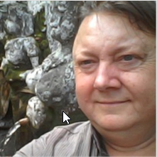
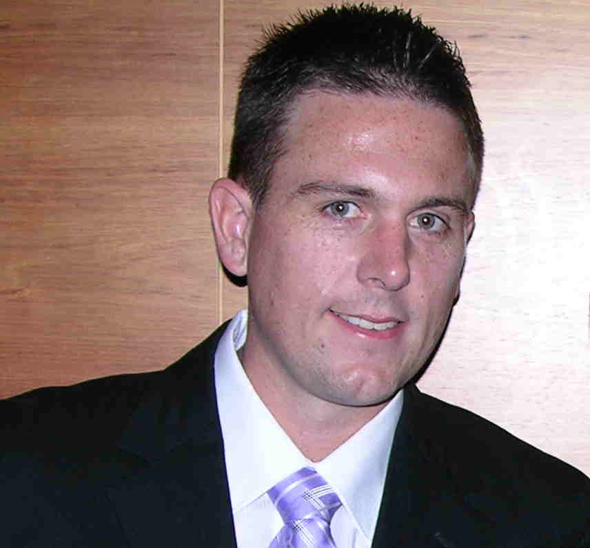

The Team - Group 14
Philip Barnes
Bachelor of Information Technology, majored in program development. In 2010 did volunteer IT work for COPE Laos which revealed the dangers of UXB (unexploded bomb) contamination in the region and its ongoing threat to the peoples' safety. The many challenges faced in assisting the organisation has driven his interest in developing a server/cloud based solution for a “technology in the field” database implementation. Previously he has had 20 years experience in engineering design and construction and 10 years project management of Stainless Steel investment casting in Thailand and architectural balustrade in Australia. Currently in final stages of completing a Master of IT.
Lewis Hutton
Bachelor of Computer Science, focusing on programming subjects with a focus on programming subjects. Previous employment focused centred on program, database and web development. Currently in final stages of completing a Master of IT. Currently in final stages of completing a Master of IT.
Matt Webb
Certified Practising Accounting (CPA Australia), Commerce Degree majoring in Accounting and Commercial Law with 10 years of experience in Australian taxation and 17 years business IT management. Currently in final stages of completing a Master of IT.